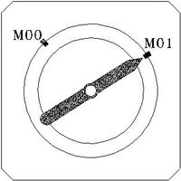

Funciones auxiliares.
Las funciones auxiliares, son las utilizadas para definir el funcionamiento de la máquina, tales como el sentido de giro y parada de la pieza o herramienta, activar y desactivar el refrigerante, los cambios de herramienta, orientación de la parada del cabezal, cierre y apertura de puertas, final del programa, etc. Estas funciones se ejecutan en primer lugar en el bloque en el cual estén escritas y a continuación el resto de las informaciones.
Primero, el control ejecuta M03 y después M08 (el cabezal girará a derechas -M03- a 3000 r.p.m. -S3000-, después de haber asumido que la S es un valor expresado en r.p.m. -G97- ). Segundo, se ejecuta el movimiento G01, posicionando la herramienta en las coordenadas absolutas - G90- X20 Y60 Z5 con un avance en mm/min. -G94- de 500.
En un bloque se pueden programar hasta 7 funciones M, siempre que no sean incompatibles entre si. Dependiendo del fabricante de la fresadora CNC la lista de funciones M puede incrementarse según el grado de automatización de la fresadora. A continuación se analizan la funciones auxiliares mas comunes.
Algunas funciones auxiliares: M del programa.
|
M00 Parada de ejecución del programa: |
|
M01 Parada condicional del programa: |
| M02 Final del programa: Cuando el control lee esta función da por finalizada la ejecución del programa y realiza una función de RESET del control, es decir, coloca al control en las condiciones iniciales de encendido. Al mismo tiempo realiza una parada del giro de cabezal. |
|
| M30 final del programa con vuelta al comienzo: Esta función realiza la misma secuencia que la función M02, pero además proporciona un retorno de lectura al primer bloque del programa situando a este en posición para la próxima ejecución. Esta es la función que se debe de utilizar en general.
|
En el siguiente ejemplo la función M30 coloca el puntero de bloque activo en el N10 y para la ejecucción de bloques. N10 G55 N20 T02 D02 N30 M06 N40 G90 G00 X25 Y33 ... ... N80 M30 ;VUELTA AL BLOQUE N10 Y M00 |